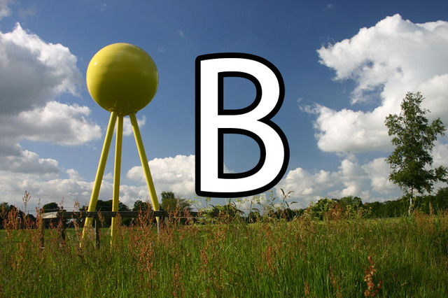

<fieldset data-role="controlgroup">
    <legend id="plpAbiB01">Wie weit muss man gehen, um auf dem Planeten-Lehrpfad zum nächsten Fixstern zu gelangen ?</legend>
    <label for="plpAbiB01a">
        <input name="plpAbiB01" id="plpAbiB01a" value="falsch" type="radio">
        Bahnhof Hude
    </label>
    <label for="plpAbiB01b">
        <input name="plpAbiB01" id="plpAbiB01b" value="richtig" type="radio">
        1x um die Erde
    </label>
    <label for="plpAbiB01c">
        <input name="plpAbiB01" id="plpAbiB01c" value="falsch" type="radio">
        Bahnhof Wüsting
    </label>
</fieldset>
<fieldset data-role="controlgroup">
    <legend id="plpAbiB02">Die Planeten leuchten selbst. Ist diese Aussage richtig oder falsch ?</legend>
    <label for="plpAbiB02a">
        <input name="plpAbiB02" id="plpAbiB02a" value="falsch" type="radio">
        Richtig
    </label>
    <label for="plpAbiB02b">
        <input name="plpAbiB02" id="plpAbiB02b" value="richtig" type="radio">
        Falsch
    </label>
</fieldset>
<fieldset data-role="controlgroup">
    <legend id="plpAbiB03">Welcher Planet ist für die Erde „Morgen – bzw. Abendstern“ ?</legend>
    <label for="plpAbiB03a">
        <input name="plpAbiB03" id="plpAbiB03a" value="falsch" type="radio">
        Merkur
    </label>
    <label for="plpAbiB03b">
        <input name="plpAbiB03" id="plpAbiB03b" value="richtig" type="radio">
        Venus
    </label>
    <label for="plpAbiB03c">
        <input name="plpAbiB03" id="plpAbiB03c" value="falsch" type="radio">
        Pluto
    </label>
</fieldset>
<fieldset data-role="controlgroup">
    <legend id="plpAbiB04">Welcher Planet ist doppelt so groß wie alle anderen zusammen ?</legend>
    <label for="plpAbiB04a">
        <input name="plpAbiB04" id="plpAbiB04a" value="falsch" type="radio">
        Saturn
    </label>
    <label for="plpAbiB04b">
        <input name="plpAbiB04" id="plpAbiB04b" value="falsch" type="radio">
        Pluto
    </label>
    <label for="plpAbiB04c">
        <input name="plpAbiB04" id="plpAbiB04c" value="richtig" type="radio">
        Jupiter
    </label>
</fieldset>
<fieldset data-role="controlgroup">
    <legend id="plpAbiB05">Welcher Planet wurde nach dem Göttervater benannt ?</legend>
    <label for="plpAbiB05a">
        <input name="plpAbiB05" id="plpAbiB05a" value="falsch" type="radio">
        Neptun
    </label>
    <label for="plpAbiB05b">
        <input name="plpAbiB05" id="plpAbiB05b" value="falsch" type="radio">
        Mars
    </label>
    <label for="plpAbiB05c">
        <input name="plpAbiB05" id="plpAbiB05c" value="richtig" type="radio">
        Jupiter
    </label>
</fieldset>
<fieldset data-role="controlgroup">
    <legend id="plpAbiB06">Welcher Planet hat den gleichen Namen wie die römische Göttin der Liebe ?</legend>
    <label for="plpAbiB06a">
        <input name="plpAbiB06" id="plpAbiB06a" value="falsch" type="radio">
        Mars
    </label>
    <label for="plpAbiB06b">
        <input name="plpAbiB06" id="plpAbiB06b" value="falsch" type="radio">
        Neptun
    </label>
    <label for="plpAbiB06c">
        <input name="plpAbiB06" id="plpAbiB06c" value="richtig" type="radio">
        Venus
    </label>
</fieldset>
<fieldset data-role="controlgroup">
    <legend id="plpAbiB07">Welcher Planet ist nach dem Gott des Meeres benannt ?</legend>
    <label for="plpAbiB07a">
        <input name="plpAbiB07" id="plpAbiB07a" value="falsch" type="radio">
        Mars
    </label>
    <label for="plpAbiB07b">
        <input name="plpAbiB07" id="plpAbiB07b" value="falsch" type="radio">
        Uranus
    </label>
    <label for="plpAbiB07c">
        <input name="plpAbiB07" id="plpAbiB07c" value="richtig" type="radio">
        Neptun
    </label>
</fieldset>
<fieldset data-role="controlgroup">
    <legend id="plpAbiB08">Welcher Planet hat die „4 Galileischen Monde“ ?</legend>
    <label for="plpAbiB08a">
        <input name="plpAbiB08" id="plpAbiB08a" value="falsch" type="radio">
        Pluto
    </label>
    <label for="plpAbiB08b">
        <input name="plpAbiB08" id="plpAbiB08b" value="richtig" type="radio">
        Jupiter
    </label>
    <label for="plpAbiB08c">
        <input name="plpAbiB08" id="plpAbiB08c" value="falsch" type="radio">
        Erde
    </label>
</fieldset>
<fieldset data-role="controlgroup">
    <legend id="plpAbiB09">Auf welchem Planeten gibt es einen "Treibhauseffekt"</legend>
    <label for="plpAbiB09a">
        <input name="plpAbiB09" id="plpAbiB09a" value="richtig" type="radio">
        Venus
    </label>
    <label for="plpAbiB09b">
        <input name="plpAbiB09" id="plpAbiB09b" value="falsch" type="radio">
        Merkur
    </label>
    <label for="plpAbiB09c">
        <input name="plpAbiB09" id="plpAbiB09c" value="falsch" type="radio">
        Uranus
    </label>
</fieldset>
<fieldset data-role="controlgroup">
    <legend id="plpAbiB10">Wie heißt der Entdecker der Planetoiden Vesta und Pallas ?</legend>
    <label for="plpAbiB10a">
        <input name="plpAbiB10" id="plpAbiB10a" value="falsch" type="radio">
        J. H. Schroetere
    </label>
    <label for="plpAbiB10b">
        <input name="plpAbiB10" id="plpAbiB10b" value="richtig" type="radio">
        W. Olbers
    </label>
    <label for="plpAbiB10c">
        <input name="plpAbiB10" id="plpAbiB10c" value="falsch" type="radio">
        H. Kohl
    </label>
</fieldset>
<fieldset data-role="controlgroup">
    <legend id="plpAbiB11">Wie heißt der „Rote Planet“ ? Er war gleichzeitig römischer Kriegsgott</legend>
    <label for="plpAbiB11a">
        <input name="plpAbiB11" id="plpAbiB11a" value="falsch" type="radio">
        Twix
    </label>
    <label for="plpAbiB11b">
        <input name="plpAbiB11" id="plpAbiB11b" value="falsch" type="radio">
        Milky Way
    </label>
    <label for="plpAbiB11c">
        <input name="plpAbiB11" id="plpAbiB11c" value="richtig" type="radio">
        Mars
    </label>
</fieldset>
<fieldset data-role="controlgroup">
    <legend id="plpAbiB12">Welcher Planet wurde nach dem Boten der Götter benannt ? Gleichzeitig ist er bei den Römern Gott der Diebe sowie des Handels und Verkehrs !</legend>
    <label for="plpAbiB12a">
        <input name="plpAbiB12" id="plpAbiB12a" value="falsch" type="radio">
        Pluto
    </label>
    <label for="plpAbiB12b">
        <input name="plpAbiB12" id="plpAbiB12b" value="falsch" type="radio">
        Asterix
    </label>
    <label for="plpAbiB12c">
        <input name="plpAbiB12" id="plpAbiB12c" value="richtig" type="radio">
        Merkur
    </label>
</fieldset>
<fieldset data-role="controlgroup">
    <legend id="plpAbiB13">Wie heiß ist es im Kern der Erde ?</legend>
    <label for="plpAbiB13a">
        <input name="plpAbiB13" id="plpAbiB13a" value="falsch" type="radio">
        100 °C
    </label>
    <label for="plpAbiB13b">
        <input name="plpAbiB13" id="plpAbiB13b" value="falsch" type="radio">
        500 °C
    </label>
    <label for="plpAbiB13c">
        <input name="plpAbiB13" id="plpAbiB13c" value="richtig" type="radio">
        6.000 °C
    </label>
</fieldset>
<fieldset data-role="controlgroup">
    <legend id="plpAbiB14">Wie lange braucht das Licht von der Erde zum Mond ?</legend>
    <label for="plpAbiB14a">
        <input name="plpAbiB14" id="plpAbiB14a" value="falsch" type="radio">
        1 Tag
    </label>
    <label for="plpAbiB14b">
        <input name="plpAbiB14" id="plpAbiB14b" value="falsch" type="radio">
        1 Nacht
    </label>
    <label for="plpAbiB14c">
        <input name="plpAbiB14" id="plpAbiB14c" value="richtig" type="radio">
        ca 1,2 Sekunden
    </label>
</fieldset>
<fieldset data-role="controlgroup">
    <legend id="plpAbiB15">Wie lange benötigt das Licht von der Erde bis zur Sonne ?</legend>
    <label for="plpAbiB15a">
        <input name="plpAbiB15" id="plpAbiB15a" value="falsch" type="radio">
        1 Tag
    </label>
    <label for="plpAbiB15b">
        <input name="plpAbiB15" id="plpAbiB15b" value="falsch" type="radio">
        1 Nacht
    </label>
    <label for="plpAbiB15c">
        <input name="plpAbiB15" id="plpAbiB15c" value="richtig" type="radio">
        ca. 8,3 Minuten
    </label>
</fieldset>
<fieldset data-role="controlgroup">
    <legend id="plpAbiB16">Wie oft kann das Licht in einer Sekunde die Erde umkreisen ?</legend>
    <label for="plpAbiB16a">
        <input name="plpAbiB16" id="plpAbiB16a" value="falsch" type="radio">
        1mal
    </label>
    <label for="plpAbiB16b">
        <input name="plpAbiB16" id="plpAbiB16b" value="falsch" type="radio">
        100mal
    </label>
    <label for="plpAbiB16c">
        <input name="plpAbiB16" id="plpAbiB16c" value="richtig" type="radio">
        7 1/2mal
    </label>
</fieldset>
<fieldset data-role="controlgroup">
    <legend id="plpAbiB17">Auf welchem Planeten dauert ein Tag länger als ein Jahr ?</legend>
    <label for="plpAbiB17a">
        <input name="plpAbiB17" id="plpAbiB17a" value="falsch" type="radio">
        Erde
    </label>
    <label for="plpAbiB17b">
        <input name="plpAbiB17" id="plpAbiB17b" value="richtig" type="radio">
        Venus
    </label>
    <label for="plpAbiB17c">
        <input name="plpAbiB17" id="plpAbiB17c" value="falsch" type="radio">
        Merkur
    </label>
</fieldset>
<fieldset data-role="controlgroup">
    <legend id="plpAbiB18">Warum darf man nie mit dem Fernglas direkt in die Sonne schauen ?</legend>
    <label for="plpAbiB18a">
        <input name="plpAbiB18" id="plpAbiB18a" value="falsch" type="radio">
        Große Überraschung
    </label>
    <label for="plpAbiB18b">
        <input name="plpAbiB18" id="plpAbiB18b" value="falsch" type="radio">
        Nicht jugendfrei
    </label>
    <label for="plpAbiB18c">
        <input name="plpAbiB18" id="plpAbiB18c" value="richtig" type="radio">
        Erblindung
    </label>
</fieldset>
<fieldset data-role="controlgroup">
    <legend id="plpAbiB19">Unsere „Milchstraße“ (die eigene Galaxis) hat ca. 100 Milliarden Sterne. Wie viele Galaxien wie die unsere gibt es etwa im Universum ?</legend>
    <label for="plpAbiB19a">
        <input name="plpAbiB19" id="plpAbiB19a" value="falsch" type="radio">
        5
    </label>
    <label for="plpAbiB19b">
        <input name="plpAbiB19" id="plpAbiB19b" value="falsch" type="radio">
        1.000
    </label>
    <label for="plpAbiB19c">
        <input name="plpAbiB19" id="plpAbiB19c" value="richtig" type="radio">
        100 Milliarden
    </label>
</fieldset>
<fieldset data-role="controlgroup">
    <legend id="plpAbiB20">Im Sommer ist die Erde näher an der Sonne als im Winter.</legend>
    <label for="plpAbiB20a">
        <input name="plpAbiB20" id="plpAbiB20a" value="falsch" type="radio">
        Stimmt
    </label>
    <label for="plpAbiB20b">
        <input name="plpAbiB20" id="plpAbiB20b" value="richtig" type="radio">
        Stimmt nicht
    </label>
    <label for="plpAbiB20c">
        <input name="plpAbiB20" id="plpAbiB20c" value="falsch" type="radio">
        Stimmt nur in Hude
    </label>
</fieldset>
<fieldset data-role="controlgroup">
    <legend id="plpAbiB21">An welchen beiden Tagen geht die Sonne genau im Westen unter ?</legend>
    <label for="plpAbiB21a">
        <input name="plpAbiB21" id="plpAbiB21a" value="falsch" type="radio">
        Sommeranfang
    </label>
    <label for="plpAbiB21b">
        <input name="plpAbiB21" id="plpAbiB21b" value="falsch" type="radio">
        Winteranfang
    </label>
    <label for="plpAbiB21c">
        <input name="plpAbiB21" id="plpAbiB21c" value="richtig" type="radio">
        Frühlings- und Herbstanfang
    </label>
</fieldset>
<fieldset data-role="controlgroup">
    <legend id="plpAbiB22">Welche Himmelrichtung zeigt der Polarstern an ?</legend>
    <label for="plpAbiB22a">
        <input name="plpAbiB22" id="plpAbiB22a" value="richtig" type="radio">
        Norden
    </label>
    <label for="plpAbiB22b">
        <input name="plpAbiB22" id="plpAbiB22b" value="falsch" type="radio">
        Osten
    </label>
    <label for="plpAbiB22c">
        <input name="plpAbiB22" id="plpAbiB22c" value="falsch" type="radio">
        Westen
    </label>
</fieldset>
<p id="tphSchnitzeljagdPlanetenlehrpfadAbiturBErgebnis"></p>
<a onclick="tphSchnitzeljagdPlanetenlehrpfadAbiturB();" class="large button expand">Auswerten</a>
